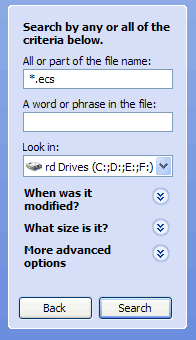
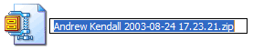
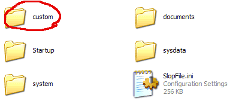
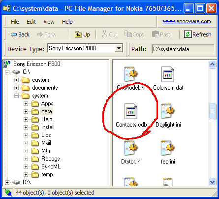

Cleaning a Sony Ericsson P800 I've had my P800 pretty much since the day it was launched in the UK. Since then I've installed plenty of software plus had the firmware updated (after which I restored the old backup of my phone). Last week I took my phone away for the weekend and to my horror the battery only lasted for about a day before it dropped down to 20%. When I first got my phone it could easily run for
several days on a single charge. I figured the battery couldn't
be dead already, so it must be software running in the background,
possibly the beta camcorder software and various other bits
and pieces ;-) Here's my step by step guide to spring cleaning your P800. Step 1 Write down the applications you use and make sure you have the install files handy. Step 2 Backup the phone. Step 3 up ,*,down, down,*,down,* Choose Format internal disk. The phone will restart and wipe itself. Step 4 By formatting the drive you will loose all your customisations and setting from your phone provider, if you want them back you must do the following. Go to your search or find option and do a search for *.ecs this should find your backup files.  Take a copy of the latest backup and rename it so the file extension is .zip  Using your favourite zip program (WinZip will do) extract the contents of this file. You will find in the internal drive a folder called custom. This contains customisations for your phone, take what you need from there. (I ignore the start-up animations as they take up unnecessary space.)  Step 5 Open PC File Manager and copy the custom folder to the C drive of your phone, now you must reset the phone to put customisations in place. On P800 go to Control panel, choose master reset and the phone will reboot and get back the custom settings.
Step 6 Now onto the address book. The address book is in your backup folder in Internal > System > Data > Contacts.cdb Now the snag is you can't just copy this to the phone as it is always in use so you must open your backup program and use it to reboot the phone, also open up PC File Manager. Now choose backup phone and as your phone restarts click cancel on the PC side of backup. While the phone says restarting you can go into PC File Manager and copy your backed up Contact.cdb over the top of the one on the phone.  That's
it, phone restored, now just install just the apps you want
and you should have a faster,
cleaner more responsive phone, not to mention a much longer
battery life :-) |